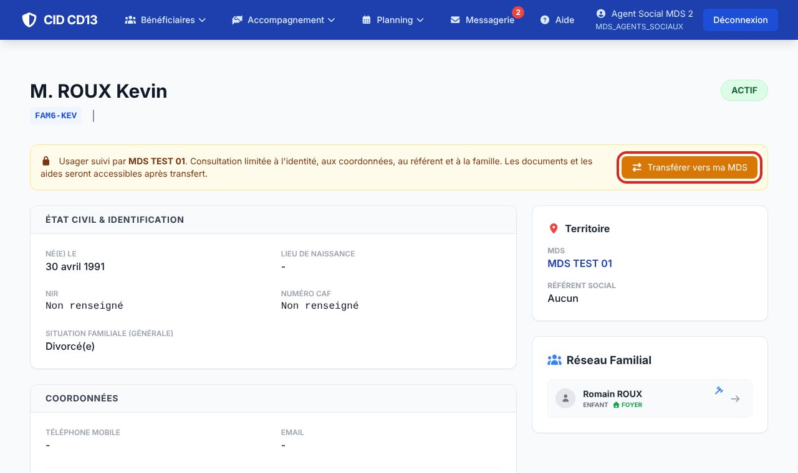
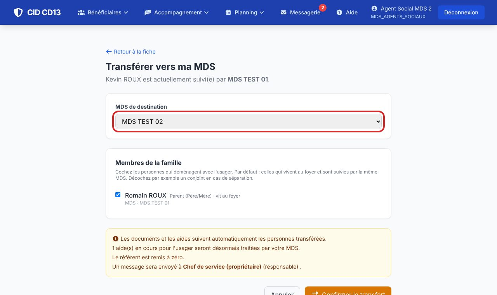
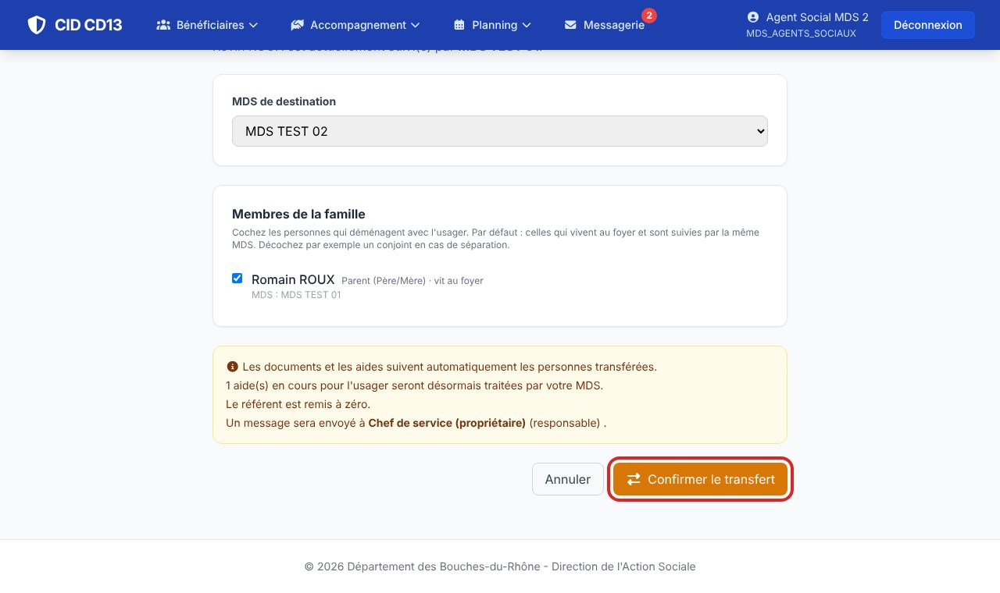
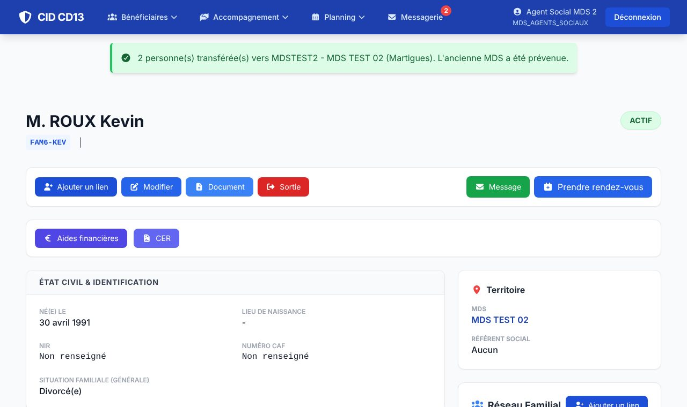

Avant de commencer
- Cherchez l'usager : sa fiche s'ouvre en consultation limitée, avec un bandeau orange.
1Demander le transfert

- Le bandeau indique la MDS qui suit l'usager. Vous voyez son identité, ses coordonnées, son référent et sa famille ; ses documents et ses aides seront accessibles après le transfert.
- Cliquez sur Transférer vers ma MDS.
2Choisir la MDS et la famille


- Vérifiez la MDS de destination (si vous travaillez dans plusieurs MDS, choisissez la bonne).
- Cochez les membres de la famille qui déménagent avec l'usager. Par défaut, CID coche ceux qui vivent au foyer et sont suivis par la même MDS. Décochez par exemple un conjoint en cas de séparation.
- Lisez l'encadré : il rappelle ce qui va suivre l'usager et qui sera prévenu.
- Cliquez sur Confirmer le transfert.
3Vérifier

- Un message indique le nombre de personnes transférées. La fiche est maintenant complète, rattachée à votre MDS.
Bon à savoir
- Les documents et les aides suivent automatiquement les personnes transférées ; les aides en cours seront traitées par votre MDS.
- Les notes personnelles du travailleur social ne partent que si leur auteur les a cochées « suit le dossier » ; les autres restent à son compte.
- Le référent est remis à zéro : pensez à en désigner un (Modifier).
- Un message CID prévient le référent sortant et le responsable de l'ancienne MDS.
Et ensuite ?
Cliquez sur une image pour l'agrandir. Le cadre rouge montre où cliquer ou quoi remplir. Toutes les données affichées sont fictives.